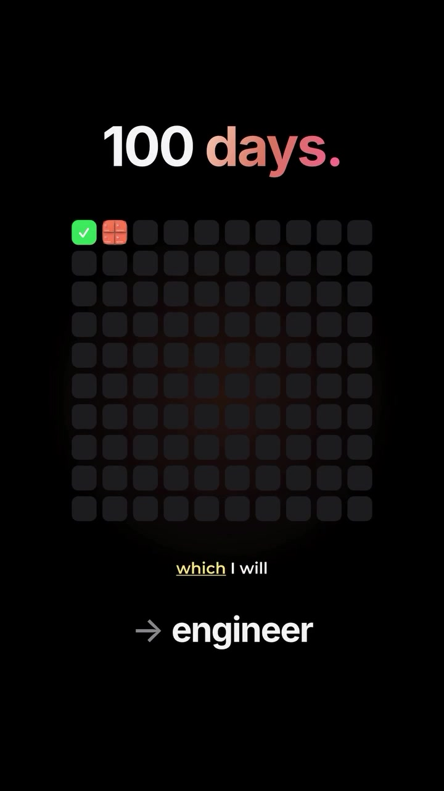

AI · Claude-Skills
4 Essential Claude Code Plugins for 10x Vibe Coding: Ponytail, Superpowers, OmniRoute & Skills
While vanilla Claude Code offers powerful terminal agency, high-frequency vibe coders quickly encounter token limit burnouts, model rate limits, and context drift. This toolkit overview documents the four core community plugins that supercharge Claude Code workflows: optimizing token budgets, automating end-to-end brainstorming-to-review pipelines, routing fallback APIs during outages, and instantiating modular subagent teams.
Visual Reference Stills

The 4 Essential Claude Code Plugins
Core Value: Less code, fewer tokens, lower latency.
Ponytail automatically strips unnecessary whitespace, compresses bulky JSON payloads, and prunes repetitive repository context before sending requests to the Anthropic API. Extends your session window by 30%–45% before hitting context token limits.
Core Value: Structured architectural thinking before execution.
Prevents Claude from jumping directly into destructive multi-file rewrites. Superpowers runs a structured interactive design interview, creates an explicit plan, generates diffs, and executes automated code reviews before committing changes.
Core Value: Zero downtime during Anthropic rate limits.
When Claude 3.5 Sonnet hits usage quotas or rate limit ceilings (429 Too Many Requests), OmniRoute dynamically reroutes pending tool calls and queries to backup provider keys (DeepSeek-V3, Gemini Flash, or local Ollama endpoints) without terminating your active terminal session.
Core Value: Specialized personas for complex tasks.
Enables Claude Code to invoke specialized sub-skills (Database Architect, Frontend Motion Engineer, Security Auditor) with custom system prompts, tools, and testing checklists tailored to each phase of your build.